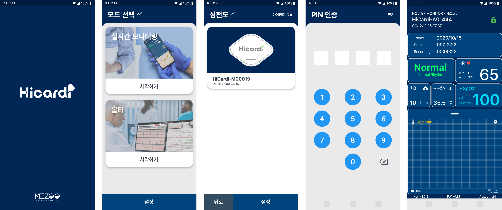
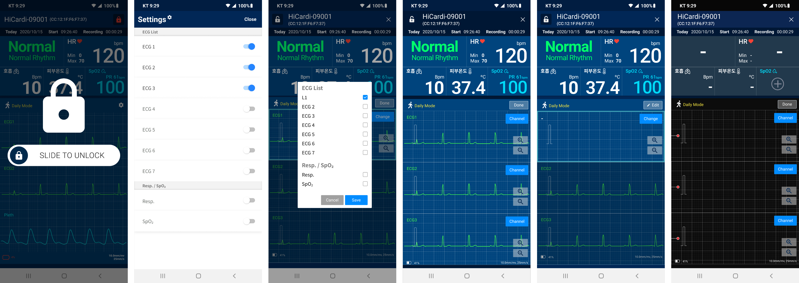
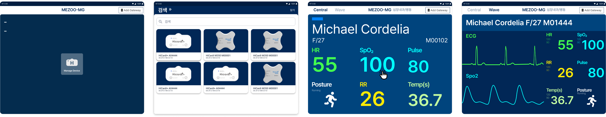
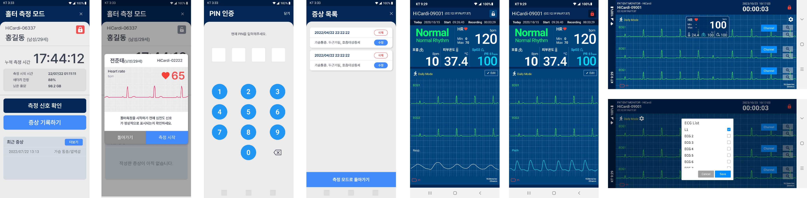

Outcome
기능은 늘었는데, 화면은 더 단순해 보였다.
판독 속도
종류별 필터링 UI 추가 효과
서브장비 신호등
산소포화도 등 안전하게 추가
기존 사용성 유지
기능 증대에도 익숙한 형태 유지
Smart View는 하이카디를 부착해 측정한 심전도 데이터를 Live Studio로 전달하는 모바일 게이트웨이다. 처음엔 심전도만 측정했지만, 이후 산소포화도와 호흡 등 측정 요소가 계속 추가됐다.
기기 업데이트가 잦았던 만큼, 디자인도 계속 새로운 요구사항을 반영해야 했다.

12Lead 파형처럼 여러 종류의 파형을 동시에 보여줘야 할 때, 사용자가 버튼을 눌렀을 때 어떤 파형을 우선순위로 둘지, 마지막으로 선택한 파형이 맨 위로 와야 하는지를 두고 여러 차례 회의가 필요했다.
알림 컬러가 공식적으로 지정돼 있지 않아, 기능이나 상태가 추가될 때마다 컬러가 계속 바뀌고 있었다.
심전도 종류를 필터링하는 기능이 없어, 판독자가 원하는 파형을 찾는 데 시간이 걸리고 있었다.
컬러와 스타일 자체는 기존 형태를 유지하되, 아이콘과 알림 컬러 체계를 통일했다. 여기에 파형 우선순위 로직과 종류별 필터링 UI를 새로 추가했다.

새 측정 요소가 추가될 때마다 어떤 데이터를 어떤 우선순위로 보여줄지 팀과 함께 논의한 뒤, 그 결론을 UI 로직으로 반영하는 과정을 반복했다.
측정 요소는 계속 늘어났지만, 화면에 다 보여줄 수는 없었다. 무엇을 먼저 보여주고 무엇을 눌렀을 때 우선순위가 바뀌어야 하는지를 정하는 게 디자인의 대부분이었다.
기존 형태를 유지하면서 기능을 늘리는 게, 완전히 새로 디자인하는 것보다 오히려 더 정교한 판단이 필요한 일이라는 걸 배웠다.
필터링과 우선순위 UI 덕분에 판독자는 원하는 파형에 더 빨리 도달하고, 늘어난 측정 데이터도 부담 없이 확인할 수 있게 됐다.

